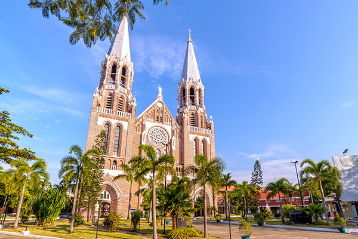

SOLEMN REMEMBERANCE –
Paying respects to fallen heroes at the Taukkyan War Cemetery
by Uma Mageshwary Gunasakaran
“THEIR NAME LIVETH FOR EVERMORE”, a meaningful quote engraved on the Stone of Remembrance, greeted me as I arrived at the Taukkyan War Cemetery. This is a phrase adopted from the Bible where the full phrase reads “Their bodies are buried in peace; but their name liveth for evermore”, and it was suggested by Rudyard Kipling as a significant inscription to commemorate the war dead. Growing up reading about the devastating effects of World War I and II, and hearing stories from my grandfather who is a war veteran, I’m deeply grateful towards all the sacrifices of soldiers and war heroes all over the world.
The Commonwealth War Graves Commission (CWGC) have established about 2500 war cemeteries and memorials in 153 countries to honour the fallen, over 1.7 million men and women who were perished serving the commonwealth military. Therefore, I always make it a point to visit memorials when I travel. As I was in Yangon for a couple of days, I looked up the CWGC website and learnt that the largest war memorial in Myanmar lies just 30 kilometres up north from Yangon city centre.
First thing in the morning, I requested for a taxi from my hotel in Yangon and set off to Taukkyan and I arrived at the Taukkyan War Cemetery. It is a well-known place for it is the largest war cemetery in Myanmar, located just off the main road. So, it is hard to miss for this structure stands out, acting as a common sight to motorists passing Taukkyan town. As I walked through the main gate, there was a plaque of public record stating that the piece of land housing the cemetery has been gifted by the people of Myanmar to primarily honour the Commonwealth servicemen who have lost their lives during the Burma Campaign of World War Two. From the entrance, I was taken aback by the calming aura and beautiful sight of its façade. It was a neat architectural feat of columns with a landscape of well-manicured lawns and garden on a vast space. A couple of metres behind the Stone of Remembrance at the entrance, stood a 7-metre tall Cross of Sacrifice.
The main part of the War Cemetery was centred by a circular structure comprised multiple cylindrical pillars. From this centre, two 10-metre high double colonnades extend out in opposite directions for about 100 metres in total, housing 56 broad rectangular columns and resulting in 112 faces inscribed with thousands of names of the brave who have honourably served the British Crown and were sacrificed in the Second World War. This entire complex is called the Rangoon Memorial. As I stood in the centre of the circular assembly, I read an inscription deeply engraved on the inner surface of the topmost ring stating “1935 – 1945. HERE ARE RECORDED THE NAMES OF TWENTY-SEVEN THOUSAND SOLDIERS OF MANY RACES UNITED IN SERVICE TO THE BRITISH CROWN WHO GAVE THEIR LIVES IN BURMA AND ASSAM BUT TO WHOM THE FORTUNE OF WAR DENIED THE CUSTOMARY RITES ACCORDED TO THEIR COMRADES IN DEATH”. The Burmese and Sanskrit translations of these words were engraved on either sides of this inscription, and another one saying “THEY DIED FOR ALL FREE MEN” inscribed across from it.

I said a silent prayer as I walked the length of the colonnade, under the shade of the roof supported by the columns, reading some of the 27000 names of the Commonwealth soldiers. The names were furnished with their ranks and their respective battalions and regiments. There is also a registry to assist family members to locate their lost loved ones. Moving past the Rangoon Memorial complex, I strolled amongst thousands of headstones. What makes Taukkyan War Cemetery the largest in Myanmar is that it accommodates 6566 headstones, in comparison to 1391 headstones in the Yangon War Cemetery and 3711 headstones in the Thanbyuzayat War Cemetery located 65 kilometres down south from Mawlamyine. So, imagine the size of the area of the grounds of Taukkyan. The headstones are neatly arranged in rows of shallow troughs within the
well-groomed lawn surrounding the Rangoon Memorial complex. Small flowering bushes of various kinds of flowers separate each headstone. The headstones bore the name and rank of each soldier together with a symbol depicting his or her faith. The cross is the most common symbol found here as Christianity was the faith of most of the soldiers. Some had a symbol of a pagoda representing
the religion of Buddhism of the Burmese soldiers, and some, the symbol of the ‘khukuri’, knife of the Nepalese Gurkhas. However, some of the plaques of the headstone only bore the words “A Soldier”, which sadly means the body could not be identified.
Towards the end of the vast compound, stood another component of the War Cemetery, which is the Taukkyan Cremation Memorial. This part commemorates around 1000 fallen heroes of the Burma Campaign who were cremated in accordance to their faith, which is widely Hinduism. On the wall, there were black plaques with inscriptions of gold stating “IN HONOUR OF THESE OFFICERS AND MEN WHO DIES IN BATTLE AND WHOSE MORTAL REMAINS WERE COMMITED TO FIRE” – a beautiful way to define ‘cremation’. This concluded my visit to the Taukkyan War Cemetery, and I left feeling melancholic and also very appreciative towards our fallen angels. For without their sacrifice, I cannot envisage the state of the world we would be living in today.